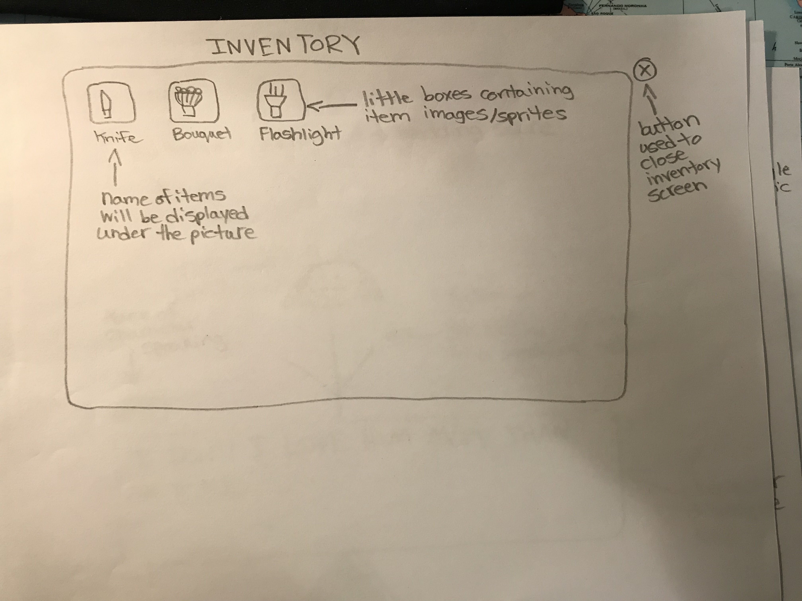

GAME SCREEN - This is the page where the story will progress and character dialogue progresses. The player can interact with objects on the screen to affect the story and or progress differently. On this screen, a picture of each character will appear with their textbox underneath. By clicking on the "settings" icon on the top right of the page, the player opens up the settings page. If the player clicks on the "toggle music" icon beside the settings icon, the game music will be toggled on or off.

INVENTORY SCREEN - There will be certain items that you can acquire and use later when given the option to. This page will show all the usable items that the player has collected. The name of usable items with their respective sprites will appear on this screen. The player can open this page by clicking "e" on their keyboard.
LOSE SCREEN - The player loses when they have ruined/ended their relationship with their selected date. When the player loses, the game screen will transition into the losing screen. The losing screen contains an angry dialogue from the player's date followed by a picture of a broken heart. To play again, the player can either refresh the page or click the "RESET" button in the settings page.
SETTINGS SCREEN - There will be a "settings gear icon" on the top right part of the game page. When this page is opened, the player can toggle with game settings such as the volume of the music and sound effects that play. Once the player has changed their settings, they are required to click save to overwrite their current settings. The "RESET" button at the bottom of the screen is used to restart the game. The settings page can be opened by clicking the "settings" icon at the top right of any page.
START SCREEN - This is the screen where the player will choose between a boy or girl character to play as and inputs his or her name. The story begins after the player has chosen their gender. If no name was entered before choosing a gender, the player's name will be preset to "player".
WINNER SCREEN - The player wins when they have reached maximum friendship points in their relationship with their selected date. When the player wins, the game screen will transition into the "winning screen". The winning screen contains a marriage scene that takes place between the player and the chosen bride. In this scene, the character chosen to be married to the player will display a happy dialogue. To play again, the player can either refresh the page or click the "RESET" button in the settings page.